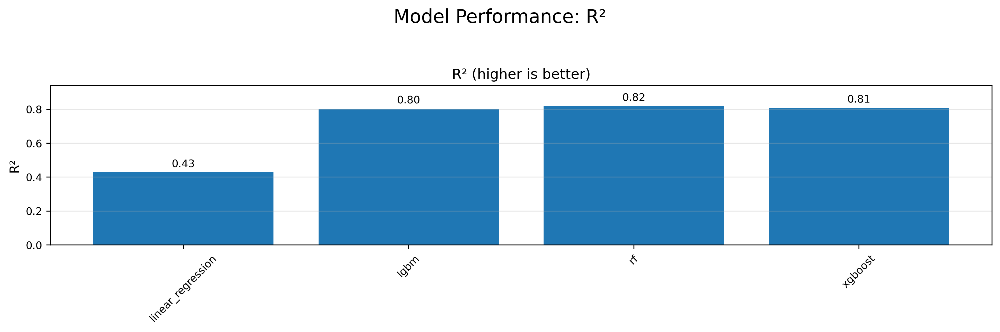
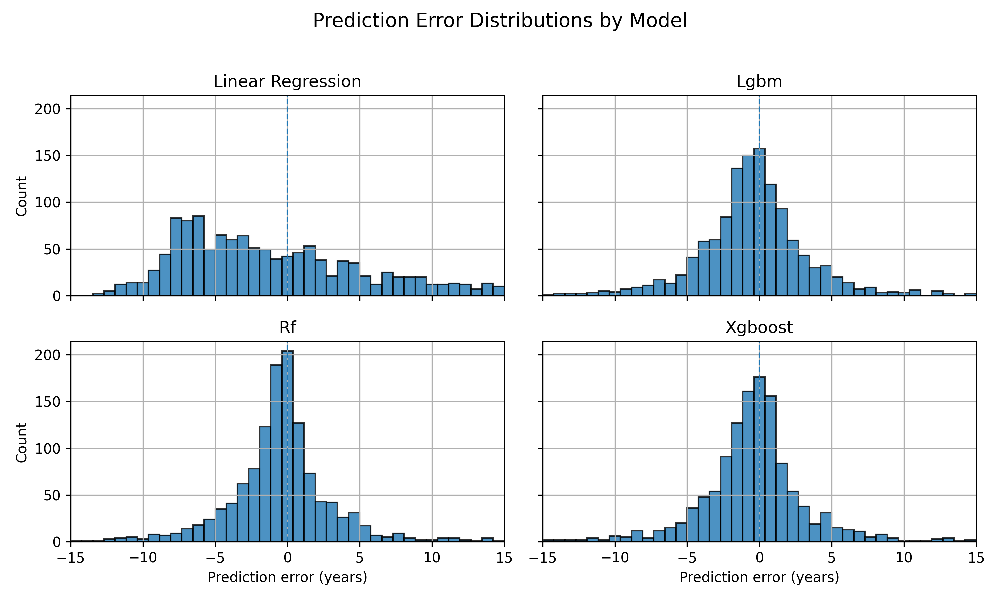

AutoML Life Expectancy Dashboard
This page explores how different regression models predict life expectancy using a small set of economic and environmental features:
- GDP per capita
- CO₂ emissions per capita
- Year
We start with an animated view of the raw data, then move into model comparison: a simple Linear Regression baseline and three tree-based models trained with FLAML AutoML:
- LightGBM (LGBM) – a fast gradient boosting model
- Random Forest (RF) – an ensemble of decision trees
- XGBoost – a powerful gradient boosting algorithm
Each section of the page is designed to answer a specific question about model performance and behavior.


Life Expectancy for each Regression Model
This graph compares the global trend in life expectancy over time to what each regression model thinks that trend looks like.
More concretely:
For every year, the data first computes the average life expectancy across all countries in the test set. It does this both for the actual values (y_actual) and for the predictions from each model:
- Linear Regression
- LightGBM (AutoML)
- Random Forest (AutoML)
- XGBoost (AutoML)
The plot then shows five lines over time: one line for the true global mean life expectancy, and one line for each model’s predicted global mean.
Example of the Data Used
The table below shows a sample of the test-set data that all of the AutoML visualizations are based on.
Each row corresponds to a single country–year observation, and the columns mean:
- Country – The country the observation comes from.
- Year – The year of the observation.
- Actual – The true life expectancy (in years) from the dataset.
- Linear – The life expectancy predicted by the Linear Regression baseline model.
- LGBM – The prediction from the LightGBM (AutoML) model.
- RF – The prediction from the Random Forest (AutoML) model.
- XGBoost – The prediction from the XGBoost (AutoML) model.
You can use this sample to see how the models behave at the individual country level:
- For some cases, the models are very close to the true value
- e.g., Mongolia 1993 (Actual ≈ 60.8, all models around 62–63).
- e.g., Mongolia 1993 (Actual ≈ 60.8, all models around 62–63).
- In other cases, certain models overestimate or underestimate life expectancy
- e.g., Namibia 2009 (Actual ≈ 55.3, Linear Regression predicts over 66 years).
- e.g., Namibia 2009 (Actual ≈ 55.3, Linear Regression predicts over 66 years).
- Different models sometimes disagree with each other
- e.g., Iraq 2015 or Ethiopia 1991, where LGBM and XGBoost predict noticeably different values.
This is the same data used to build:
- the error distribution plots,
- the global mean life expectancy comparison, and
- the model performance summaries elsewhere on this page.
| Country | Year | Actual | Linear | LGBM | RF | XGBoost | |
|---|---|---|---|---|---|---|---|
| 0 | Mongolia | 1993 | 60.824220 | 62.813935 | 63.351031 | 63.207014 | 63.153885 |
| 1 | Netherlands | 2001 | 78.190244 | 76.077297 | 76.609169 | 77.463067 | 76.816400 |
| 2 | Gabon | 2005 | 62.978000 | 66.944917 | 67.912951 | 67.528558 | 67.883780 |
| 3 | Iraq | 2015 | 69.977000 | 68.453716 | 73.703125 | 71.363042 | 72.083460 |
| 4 | Namibia | 2009 | 55.347000 | 66.208689 | 62.037008 | 63.414637 | 61.578580 |
| 5 | Kuwait | 2003 | 76.644561 | 80.836042 | 76.328738 | 76.245024 | 76.486730 |
| 6 | Saudi Arabia | 2010 | 75.616000 | 76.999758 | 76.911809 | 76.772930 | 76.807450 |
| 7 | Rwanda | 1992 | 44.397000 | 61.116001 | 46.472547 | 47.193931 | 47.817066 |
| 8 | Portugal | 2019 | 81.675610 | 73.612475 | 80.127281 | 80.283526 | 80.208190 |
| 9 | Iceland | 1994 | 79.247073 | 72.200175 | 77.684072 | 77.642499 | 77.710980 |
| 10 | Ethiopia | 2017 | 64.766000 | 66.911374 | 62.373237 | 62.437714 | 62.059208 |
| 11 | Greenland | 2021 | 71.813902 | 81.988097 | 77.963407 | 78.682981 | 80.424560 |
| 12 | Syrian Arab Republic | 2005 | 72.797000 | 65.138117 | 72.090990 | 70.497078 | 71.523964 |
| 13 | Lao PDR | 2016 | 67.014000 | 67.729874 | 71.922950 | 72.281658 | 72.273370 |
| 14 | Bolivia | 2005 | 64.182000 | 64.881282 | 66.375317 | 65.853058 | 64.082080 |
| 15 | Gambia, The | 1996 | 54.849000 | 62.116098 | 55.791025 | 54.914084 | 54.275190 |
| 16 | Cameroon | 1996 | 53.200000 | 62.311175 | 60.238053 | 60.429533 | 60.553440 |
| 17 | Bosnia and Herzegovina | 2005 | 76.424000 | 65.928014 | 71.345029 | 69.728271 | 69.322650 |
| 18 | Ethiopia | 1991 | 46.657000 | 60.860123 | 45.315435 | 46.663649 | 45.165127 |
| 19 | Colombia | 2018 | 76.579000 | 68.986479 | 75.268902 | 75.513137 | 76.257850 |
| 20 | Nepal | 2020 | 69.106000 | 67.795745 | 65.645099 | 66.657892 | 67.174460 |
| 21 | Micronesia, Fed. Sts. | 1994 | 64.082000 | 62.526746 | 66.549900 | 64.999154 | 66.685000 |
| 22 | Barbados | 2015 | 76.055000 | 72.147357 | 76.022908 | 74.380806 | 78.464210 |
| 23 | Ukraine | 2009 | 69.159000 | 67.225032 | 70.591364 | 69.885342 | 70.352190 |
| 24 | Indonesia | 2007 | 67.914000 | 65.480711 | 68.775066 | 68.770679 | 68.674520 |